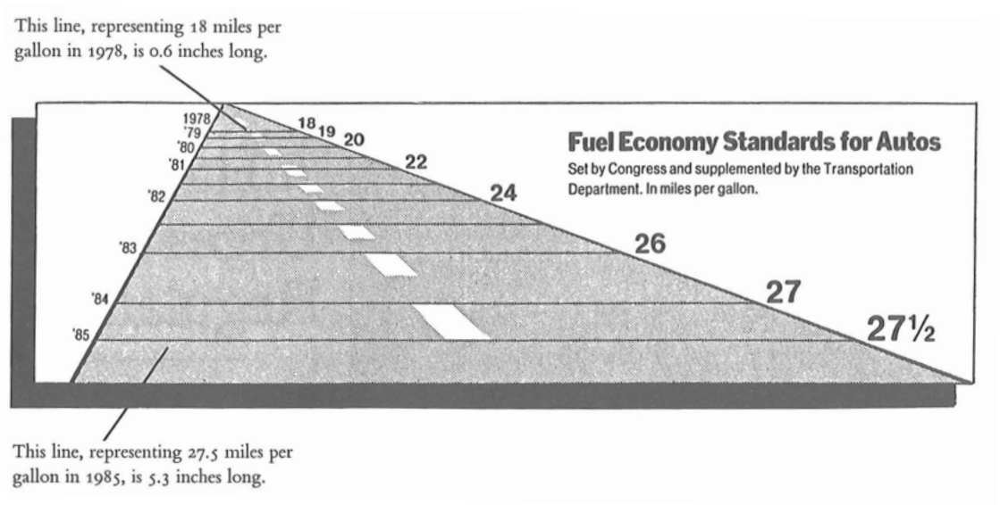

2 Trochę teorii…
2.1 Test racjonalnego myślenia
- Jeśli 5 maszyn w ciągu 5 minut produkuje 5 urządzeń, ile czasu zajmie 100 maszynom zrobienie 100 urządzeń?
- Na stawie rozrasta się kępa lilii wodnych. Codziennie kępa staje się dwukrotnie większa. Jeśli zarośnięcie całego stawu zajmie liliom 48 dni, to ile dni potrzeba, żeby zarosły połowę stawu?
- Kij bejsbolowy i piłka kosztują razem 1 dolar i 10 centów. Kij kosztuje o dolara więcej niż piłka. Ile kosztuje piłka?
Wizualizacja – ogólna nazwa graficznych metod tworzenia, analizy i przekazywania informacji. Za pomocą środków wizualnych ludzie wymieniają się zarówno ideami abstrakcyjnymi, jak i komunikatami mającymi bezpośrednie oparcie w rzeczywistości. W dzisiejszych czasach wizualizacja wpływa na sposób prowadzenia badań naukowych, jest rutynowo wykorzystywana w dyscyplinach technicznych i medycynie, służy celom dydaktycznym, a także bywa pojmowana jako środek wyrazu artystycznego.
2.2 Analiza danych - podstawowe pojęcia
2.2.1 Współczesne znaczenia słowa “statystyka”:
- zbiór danych liczbowych pokazujący kształtowanie procesów i zjawisk np. statystyka ludności.
- wszelkie czynności związane z gromadzeniem i opracowywaniem danych liczbowych np. statystyka pewnego problemu dokonywana przez GUS.
- charakterystyki liczbowe np. statystyki próby np. średnia arytmetyczna, odchylenie standardowe itp.
- dyscyplina naukowa - nauka o metodach badania zjawisk masowych.
2.2.2 “Masowość”
Zjawiska/procesy masowe - badaniu podlega duża liczba jednostek. Dzielą się na:
- gospodarcze (np. produkcja, konsumpcja, usługi reklama),
- społeczne (np. wypadki drogowe, poglądy polityczne),
- demograficzne (np. urodzenia, starzenie, migracje).
2.2.3 Podział statystyki
Statystyka - dyscyplina naukowa - podział:
- statystyka opisowa - zajmuje się sprawami związanymi z gromadzeniem, prezentacją, analizą i interpretacją danych liczbowych. Obserwacja obejmuje całą badaną zbiorowość.
- statystyka matematyczna - uogólnienie wyników badania części zbiorowości (próby) na całą zbiorowość.
2.2.4 Zbiorowość/populacja
Zbiorowość statystyczna, populacja statystyczna: zbiór obiektów podlegających badaniu statystycznemu. Tworzą je jednostki podobne do siebie, logicznie powiązane, lecz nie identyczne. Mają pewne cechy wspólne oraz pewne właściwości pozwalające je różnicować.
- przykłady:
- badanie wzrostu Polaków - mieszkańcy Polski
- poziom nauczania w szkołach woj. warmińsko-mazurskiego - szkoły woj. warmińsko-mazurskiego.
- podział:
- zbiorowość/populacja generalna - obejmuje całość,
- zbiorowość/populacja próbna (próba) - obejmuje część populacji.
2.2.5 Jednostka statyczna
Jednostka statystyczna: każdy z elementów zbiorowości statystycznej.
- przykłady:
- studenci UWM - student UWM
- mieszkańcy Polski - każda osoba mieszkająca w Polsce
- maszyny produkowane w fabryce - każda maszyna
2.2.6 Cechy statystyczne
Cechy statystyczne
- właściwości charakteryzujące jednostki statystyczne w danej zbiorowości statystycznej.
- dzielimy je na stałe i zmienne.
Cechy stałe
- takie właściwości, które są wspólne wszystkim jednostkom danej zbiorowości statystycznej.
- podział:
- rzeczowe - kto lub co jest przedmiotem badania statystycznego,
- czasowe - kiedy zostało przeprowadzone badanie lub jakiego okresu czasu dotyczy badanie,
- przestrzenne - jakiego terytorium (miejsce lub obszar) dotyczy badanie.
- przykład: studenci WMiI UWM w Olsztynie w roku akad. 2017/2018:
- cecha rzeczowa: posiadanie legitymacji studenckiej,
- cecha czasowa - studenci studiujący w roku akad. 2017/2018
- cecha przestrzenna - miejsce: WMiI UWM w Olsztynie.
Cechy zmienne
- właściwości różnicujące jednostki statystyczne w danej zbiorowości.
- przykład: studenci UWM - cechy zmienne: wiek, płeć, rodzaj ukończonej szkoły średniej, kolor oczu, wzrost.
Ważne:
- obserwacji podlegają tylko cechy zmienne,
- cecha stała w jednej zbiorowości może być cechą zmienną w innej zbiorowości.
Przykład: studenci UWM mają legitymację wydaną przez UWM. Studenci wszystkich uczelni w Polsce mają legitymacje wydane przez różne szkoły.
Podział cech zmiennych:
- cechy mierzalne (ilościowe) - można je wyrazić liczbą wraz z określoną jednostką miary.
- cechy niemierzalne (jakościowe) - określane słownie, reprezentują pewne kategorie.
Przykład: zbiorowość studentów. Cechy mierzalne: wiek, waga, wzrost, liczba nieobecności. Cechy niemierzalne: płeć, kolor oczu, kierunek studiów.
Często ze względów praktycznych cechom niemierzalnym przypisywane są kody liczbowe. Nie należy ich jednak mylić z cechami mierzalnymi. Np. 1 - wykształcenie podstawowe, 2 - wykształcenie zasadnicze, itd…
Podział cech mierzalnych:
- ciągłe - mogące przybrać każdą wartość z określonego przedziału, np. wzrost, wiek, powierzchnia mieszkania.
- skokowe - mogące przyjmować konkretne (dyskretne) wartości liczbowe bez wartości pośrednich np. liczba osób w gospodarstwie domowych, liczba osób zatrudnionych w danej firmie.
Cechy skokowe zazwyczaj mają wartości całkowite choć nie zawsze jest to wymagane np. liczba etatów w firmie (z uwzględnieniem części etatów).
2.2.7 Skale
Skala pomiarowa
- to system, pozwalający w pewien sposób usystematyzować wyniki pomiarów statystycznych.
- podział:
- skala nominalna,
- skala porządkowa,
- skala przedziałowa (interwałowa),
- skala ilorazowa (stosunkowa).
Skala nominalna
- skala, w której klasyfikujemy jednostkę statystyczną do określonej kategorii.
- wartość w tej skali nie ma żadnego uporządkowana.
- przykład:
| Religia | Kod |
|---|---|
| Chrześcijaństwo | 1 |
| Islam | 2 |
| Buddyzm | 3 |
Skala porządkowa
- wartości mają jasno określony porządek, ale nie są dane odległości między nimi,
- pozwala na uszeregowanie elementów.
- przykłady:
| Wykształcenie | Kod |
|---|---|
| Podstawowe | 1 |
| Średnie | 2 |
| Wyższe | 3 |
| Dochód | Kod |
|---|---|
| Niski | 1 |
| Średni | 2 |
| Wysoki | 3 |
Skala przedziałowa (interwałowa)
- wartości cechy wyrażone są poprzez konkretne wartości liczbowe,
- pozwala na porównywanie jednostek (coś jest większe lub mniejsze),
- nie możliwe jest badanie ilorazów (określenie ile razy dana wartość jest większa lub mniejsza od drugiej).
- przykład:
| Miasto | Temperatura w \(^{\circ}C\) | Temperatura w \(^{\circ}F\) |
|---|---|---|
| Warszawa | 15 | 59 |
| Olsztyn | 10 | 50 |
| Gdańsk | 5 | 41 |
| Szczecin | 20 | 68 |
Skala ilorazowa (stosunkowa)
- wartości wyrażone są przez wartości liczbowe,
- możliwe określenie jest relacji mniejsza lub większa między wartościami,
- możliwe jest określenie stosunku (ilorazu) między wartościami,
- występuje zero absolutne.
- przykład:
| Produkt | Cena w zł |
|---|---|
| Chleb | 3 |
| Masło | 8 |
| Gruszki | 5 |
2.3 Rodzaje badań statystycznych
- badanie pełne - obejmują wszystkie jednostki zbiorowości statystycznej.
- spis statystyczny,
- rejestracja bieżąca,
- sprawozdawczość statystyczna.
- badania częściowe - obserwowana jest część populacji. Przeprowadza się wtedy gdy badanie pełne jest niecelowe lub niemożliwe.
- metoda monograficzna,
- metoda reprezentacyjna.
2.4 Etapy badania statystycznego
- projektowanie i organizacja badania: ustalenie celu, podmiotu, przedmiotu, zakresu, źródła i czasu trwania badania;
- obserwacja statystyczna;
- opracowanie materiału statystycznego: kontrola materiału statystycznego, grupowanie uzyskanych danych, prezentacja wyników danych;
- analiza statystyczna.
2.5 Analiza danych zastanych
Analiza danych zastanych – proces przetwarzania danych w celu uzyskania na ich podstawie użytecznych informacji i wniosków. W zależności od rodzaju danych i stawianych problemów, może to oznaczać użycie metod statystycznych, eksploracyjnych i innych.
Korzystanie z danych zastanych jest przykładem badań niereaktywnych - metod badań zachowań społecznych, które nie wpływają na te zachowania. Dane takie to: dokumenty, archiwa, sprawozdania, kroniki, spisy ludności, księgi parafialne, dzienniki, pamiętniki, blogi internetowe, audio-pamiętniki, archiwa historii mówionej i inne. (Wikipedia)
Dane zastane możemy podzielić ze względu na (Makowska red. 2013):
- Charakter: Ilościowe, Jakościowe
- Formę: Dane opracowane, Dane surowe
- Sposób powstania: Pierwotne, Wtórne
- Dynamikę: Ciągła rejestracja zdarzeń, Rejestracja w interwałach czasowych, Rejestracja jednorazowa
- Poziom obiektywizmu: Obiektywne, Subiektywne
- Źródła pochodzenia: Dane publiczne, Dane prywatne
Analiza danych to proces polegający na sprawdzaniu, porządkowaniu, przekształcaniu i modelowaniu danych w celu zdobycia użytecznych informacji, wypracowania wniosków i wspierania procesu decyzyjnego. Analiza danych ma wiele aspektów i podejść, obejmujących różne techniki pod różnymi nazwami, w różnych obszarach biznesowych, naukowych i społecznych. Praktyczne podejście do definiowania danych polega na tym, że dane to liczby, znaki, obrazy lub inne metody zapisu, w formie, którą można ocenić w celu określenia lub podjęcia decyzji o konkretnym działaniu. Wiele osób uważa, że dane same w sobie nie mają znaczenia – dopiero dane przetworzone i zinterpretowane stają się informacją.
2.6 Proces analizy danych
Analiza odnosi się do rozbicia całości posiadanych informacji na jej odrębne komponenty w celu indywidualnego badania. Analiza danych to proces uzyskiwania nieprzetworzonych danych i przekształcania ich w informacje przydatne do podejmowania decyzji przez użytkowników. Dane są zbierane i analizowane, aby odpowiadać na pytania, testować hipotezy lub obalać teorie. Istnieje kilka faz, które można wyszczególnić w procesie analizy danych. Fazy są iteracyjne, ponieważ informacje zwrotne z faz kolejnych mogą spowodować dodatkową pracę w fazach wcześniejszych.
2.6.1 Zdefiniowanie wymagań
Przed przystąpieniem do analizy danych, należy dokładnie określić wymagania jakościowe dotyczące danych. Dane wejściowe, które mają być przedmiotem analizy, są określone na podstawie wymagań osób kierujących analizą lub klientów (którzy będą używać finalnego produktu analizy). Ogólny typ jednostki, na podstawie której dane będą zbierane, jest określany jako jednostka eksperymentalna (np. osoba lub populacja ludzi. Dane mogą być liczbowe lub kategoryczne (tj. Etykiety tekstowe). Faza definiowania wymagań powinna dać odpowiedź na 2 zasadnicze pytania:
- co chcemy zmierzyć?
- w jaki sposób chcemy to zmierzyć?
2.6.2 Gromadzenie danych
Dane są gromadzone z różnych źródeł. Wymogi, co do rodzaju i jakości danych mogą być przekazywane przez analityków do “opiekunów danych”, takich jak personel technologii informacyjnych w organizacji. Dane ponadto mogą być również gromadzone automatycznie z różnego rodzaju czujników znajdujących się w otoczeniu - takich jak kamery drogowe, satelity, urządzenia rejestrujące obraz, dźwięk oraz parametry fizyczne. Kolejną metodą jest również pozyskiwanie danych w drodze wywiadów, gromadzenie ze źródeł internetowych lub bezpośrednio z dokumentacji.
2.6.3 Przetwarzanie danych
Zgromadzone dane muszą zostać przetworzone lub zorganizowane w sposób logiczny do analizy. Na przykład, mogą one zostać umieszczone w tabelach w celu dalszej analizy - w arkuszu kalkulacyjnym lub innym oprogramowaniu. Oczyszczanie danych Po fazie przetworzenia i uporządkowania, dane mogą być niekompletne, zawierać duplikaty lub zawierać błędy. Konieczność czyszczenia danych wynika z problemów związanych z wprowadzaniem i przechowywaniem danych. Czyszczenie danych to proces zapobiegania powstawaniu i korygowania wykrytych błędów. Typowe zadania obejmują dopasowywanie rekordów, identyfikowanie nieścisłości, ogólny przegląd jakość istniejących danych, usuwanie duplikatów i segmentację kolumn. Niezwykłe istotne jest też zwracanie uwagi na dane których wartości są powyżej lub poniżej ustalonych wcześniej progów (ekstrema).
2.6.4 Właściwa analiza danych
Istnieje kilka metod, które można wykorzystać do tego celu, na przykład data mining, business intelligence, wizualizacja danych lub badania eksploracyjne. Ta ostatnia metoda jest sposobem analizowania zbiorów informacji w celu określenia ich odrębnych cech. W ten sposób dane mogą zostać wykorzystane do przetestowania pierwotnej hipotezy. Statystyki opisowe to kolejna metoda analizy zebranych informacji. Dane są badane, aby znaleźć najważniejsze ich cechy. W statystykach opisowych analitycy używają kilku podstawowych narzędzi - można użyć średniej lub średniej z zestawu liczb. Pomaga to określić ogólny trend aczkolwiek nie zapewnia to dużej dokładności przy ocenie ogólnego obrazu zebranych danych. W tej fazie ma miejsce również modelowanie i tworzenie formuł matematycznych - stosowane są w celu identyfikacji zależności między zmiennymi, takich jak korelacja lub przyczynowość.
2.6.5 Raportowanie i dystrybucja wyników
Ta faza polega na ustalaniu w jakiej formie przekazywać wyniki. Analityk może rozważyć róże techniki wizualizacji danych, aby w sposób wyraźnym i skuteczny przekazać wnioski z analizy odbiorcom. Wizualizacja danych wykorzystuje formy graficzne jak wykresy i tabele. Tabele są przydatne dla użytkownika, który może wyszukiwać konkretne rekordy, podczas gdy wykresy (np. wykresy słupkowe lub liniowe) dają spojrzenie ilościowych na zbiór analizowanych danych.
2.7 Skąd brać dane?
Darmowa repozytoria danych:
Przydatne strony:
2.8 Koncepcja “Tidy data”
Koncepcja czyszczenia danych (ang. tidy data):
- WICKHAM, Hadley . Tidy Data. Journal of Statistical Software, [S.l.], v. 59, Issue 10, p. 1 - 23, sep. 2014. ISSN 1548-7660. Available at: https://www.jstatsoft.org/v059/i10. Date accessed: 25 oct. 2018. doi:http://dx.doi.org/10.18637/jss.v059.i10.
2.8.1 Zasady “czystych danych”
Idealne dane są zaprezentowane w tabeli:
| Imię | Wiek | Wzrost | Kolor oczu |
|---|---|---|---|
| Adam | 26 | 167 | Brązowe |
| Sylwia | 34 | 164 | Piwne |
| Tomasz | 42 | 183 | Niebieskie |
Na co powinniśmy zwrócić uwagę?
- jedna obserwacja (jednostka statystyczna) = jeden wiersz w tabeli/macierzy/ramce danych
- wartości danej cechy znajdują się w kolumnach
- jeden typ/rodzaj obserwacji w jednej tabeli/macierzy/ramce danych
2.8.2 Przykłady nieuporządkowanych danych
| Imię | Wiek | Wzrost | Brązowe | Niebieskie | Piwne |
|---|---|---|---|---|---|
| Adam | 26 | 167 | 1 | 0 | 0 |
| Sylwia | 34 | 164 | 0 | 0 | 1 |
| Tomasz | 42 | 183 | 0 | 1 | 0 |
Nagłowki kolumn muszą odpowiadać cechom, a nie wartościom zmiennych.
2.8.3 Długie czy szerokie dane?
https://seaborn.pydata.org/tutorial/data_structure.html#long-form-vs-wide-form-data
2.9 Parę rad na dobre prezentacje
Edward Tufte, prof z Yale, https://www.edwardtufte.com/
Prezentuj dane “na bogato”.
Nie ukrywaj danych, pokazuj prawdę.
Nie używaj wykresów śmieciowych.
Pokazuj zmienność danych, a nie projektuj jej.
Wykres ma posiadać jak najmniejszy współczynnik kłamstwa (lie-factor).
Powerpoint to zło!
2.9.1 Współczynnik kłamstwa
- stosunek efektu widocznego na wykresie do efektu wykazywanego przez dane, na podstawie których ten wykres narysowaliśmy.
2.9.2 Współczynnik kłamstwa

[Tufte, 1991] Edward Tufte, The Visual Display of Quantitative Information, Second Edition, Graphics Press, USA, 1991, p. 57 – 69.
\[\operatorname{LieFactor} = \frac{\text{rozmiar efektu widocznego na wykresie}}{\text{rozmiar efektu wynikającego z danych}}\]
\[\text{rozmiar efektu} = \frac{|\text{druga wartość}-\text{pierwsza wartość}|}{\text{pierwsza wartość}}\]
\[\operatorname{LieFactor} = \frac{\frac{5.3-0.6}{0.6}}{\frac{27.5-18}{18}} \approx 14.8\]
2.10 Jak tworzyć?
2.11 Bibliografia
- https://pl.wikipedia.org/wiki/Wizualizacja
- https://mfiles.pl/pl/index.php/Analiza_danych, dostęp online 1.04.2019.
- Walesiak M., Gatnar E., Statystyczna analiza danych z wykorzystaniem programu R, PWN, Warszawa, 2009.
- Wasilewska E., Statystyka opisowa od podstaw, Podręcznik z zadaniami, Wydawnictwo SGGW, Warszawa, 2009.
- https://en.wikipedia.org/wiki/Cognitive_reflection_test, dostęp online 20.03.2023.
- https://qlikblog.pl/edward-tufte-dobre-praktyki-prezentacji-danych/, dostęp online 20.03.2023.